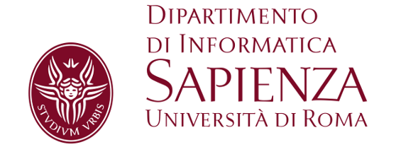

- 
-
work
Università di Roma, La Sapienza - Dipartimento di Informatica
-
Viale Regina Elena 295, 00161, Roma (RM)
Building G, Room G26 -
ti.1amorinu.id@illerep
I am Assistant Professor (RTD-B) at Dipartimento di Informatica, Università di Roma, La Sapienza.
My research interests regard many aspects of formal methods for Artificial Intelligence. In particular, I work on verification and synthesis problems for multi-agent systems, knowledge representation, strategic reasoning, as well as logic, games, and automata theory.
My recent focus has been on Rational Synthesis, that concerns the problem of the synthesis of equilibria for games that are used to model multi-agent interacting scenarios such as autonomous-driving cars, automated warehouse, and the like. I have contributed to the development of EVE: a formal verification tool for the automated analysis of temporal equilibrium properties of concurrent and multi-agent systems.
Short bio
From February 2012 to March 2015, I have been PhD student at University of Naples "Federico II" working under the supervision of Prof. Aniello Murano. During my PhD, I have been visiting research scholar at Rice University under the supervision of Prof. Moshe Vardi. On April 2015, I joined University of Oxford as Postdoctoral Research Assistant, working with Prof. Michael Wooldridge on his Advanced ERC project RACE. On July 2018, I moved to University of Leicester and then, in June 2019, Chalmers / University of Gothenburg to work with Prof. Nir Piterman as Research Associate on his Consolidator ERC project dSynMA. From January 2020 to November 2021, I have been at Dipartimento di Ingegneria Informatica, Automatica e Gestionale at Università di Roma, La Sapienza as Research Associate, working with Prof. Giuseppe de Giacomo on his Advanced ERC project WhiteMech.
In November 2020, I obtained the National Scientific Qualification for Associate Professor in Computer Science (Scientic Area INF/01).
In May 2021, I obtained the National Scientific Qualification for Associate Professor in Mathematical Logic (Scientific Area MAT/01).
Teaching
- 2021-2022: Geometria (Computer and Automation Engineering - Sapienza University of Rome).
- 2018-2019: Game Theory and Formal Methods (Short PhD Course at University of Leicester).
Tutoring
- 2020-2021: Formal Methods (Computer and Automation Engineering - Sapienza University of Rome).
- 2020-2021: Reasoning Agents (Computer and Automation Engineering - Sapienza University of Rome).
- 2017-2018: Computer-Aided Formal Verification (Computer Science - University of Oxford).
- 2016-2017: Computational Complexity (Computer Science - University of Oxford).
- 2016-2017: Computer-Aided Formal Verification (Computer Science - University of Oxford).
Events
- LAMAS&SR 2021 (Chair)
- IJCAI 2022-2024 (Program Committee Board)
- AAAI 2022 (Programm Committee)
- AAMAS 2022 (Programm Committee)
Past Events
- Chair: RADICAL 2019.
- Senior Program Committee: IJCAI 2021.
- Program Committee: AAAI 2021, AAMAS 2021, IJCAI 2020, EUMAS 2020, AAMAS 2020, ECAI 2020, IJCAI 2019, AAMAS 2019, EUMAS 2018, IJCAI 2018, AAMAS 2018, AAAI 2018, EUMAS 2017, SR 2017, CILC 2017, IJCAI 2017, IJCAI 2016, AAMAS 2016.
- Organizing Committee: SR 2015, SR 2013, GAMES 2012.
Publications
Most of the papers available from this list appear in print, and the corresponding copyright is held by the publisher. While the papers can be used for personal use, redistribution or reprinting for commercial purposes is prohibited. Preproceedings versions are available upon request.© 2021. All rights reserved.